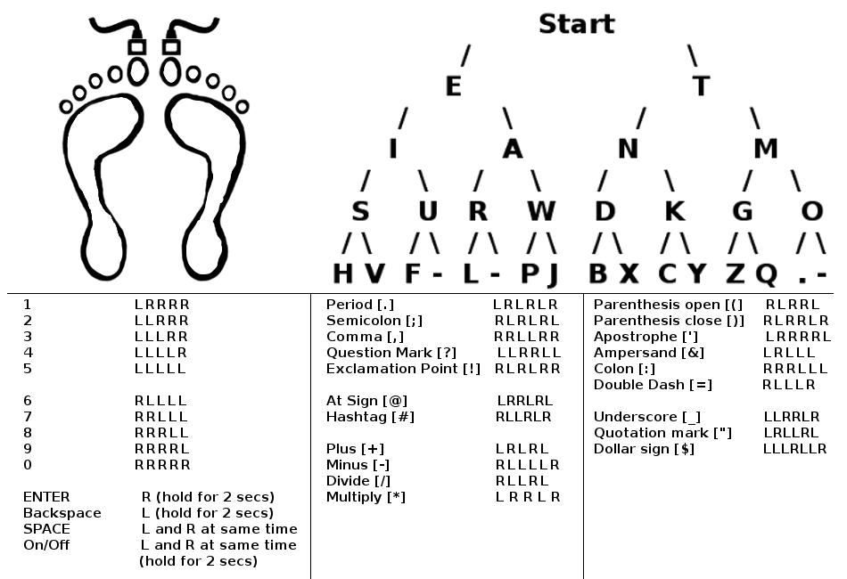
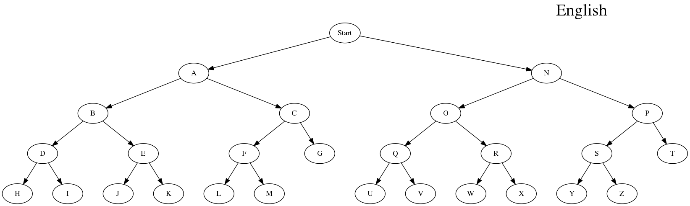
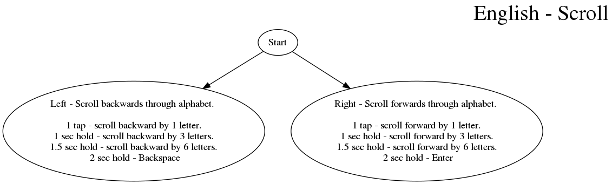

----Morse code tree (Mnemonic aid)
Left side: EIASURWHVF-L-PJ
Every individual achieves serendipity unless really whinny hipsters voices fustration - let - people jam
Every individual attains superpowers using really wicked hip vibrations furiously - letting - people jive
Eagles idle attentively searching ugly ravens while high vortexes fluctuate - like - popping jazz
Right side: TNMDKGOBXCYZQ.-
The nasty men do kicking games over breakfast x-raying chumps yearning zoo quests . -
Talking numbers means dealing kids grief only because x-ray children yell zero quips . -
The ninga master does karate grips on bad x-ray chumps yelling zealous quarrels . -
Come up with your own mnemonic
Pattern: 1-2-4-8
[0]
[1]
[2]
[3]

----Tap code (Mnemonic aid)
Left most letters: AFLQV
All friends live quests vicariously
Tap code
Music

Stopwatch

English

English - Morse Code (Mnemonic)
English - Scroll

English - Tap code
Svenska

Deutsch - Morsezeichen

Nederlands

Español

Polski

日本語 - 1

日本語 - 2

日本語 - モールス信号